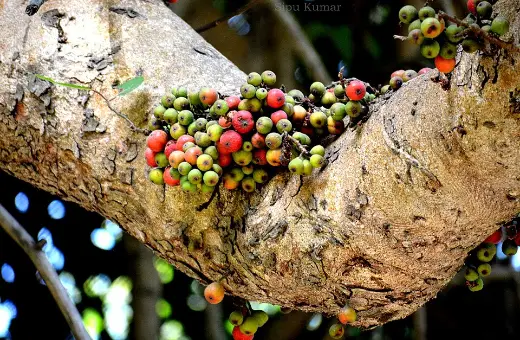

Wild fruit · All year
Cluster fig
Ficus racemosa
Also called Cluster fig
Cluster fig is a wild fruit you can forage all year round in Tropical north and Subtropical east coast. Riverside fig tree with figs growing in clusters straight from the trunk and branches.

When is cluster fig in season in Australia?
Cluster fig is usually in season all year round. Timing shifts with weather, latitude and altitude.
Where does cluster fig grow in Australia?
Cluster fig grows in New South Wales, Northern Territory, Queensland, Western Australia. Regions: Tropical north, Subtropical east coast.
How do you recognise cluster fig?
Riverside fig tree with figs growing in clusters straight from the trunk and branches.
How do you harvest cluster fig?
Pick only fully ripe fruit that comes away easily, into a shallow container so it doesn't crush. Leave plenty on the plant for birds and wildlife.
How do you eat cluster fig?
Ripe red figs raw or cooked; check for wasps.
How do you store cluster fig?
Dry.
What is cluster fig good for?
Calories.